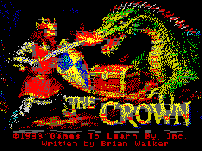
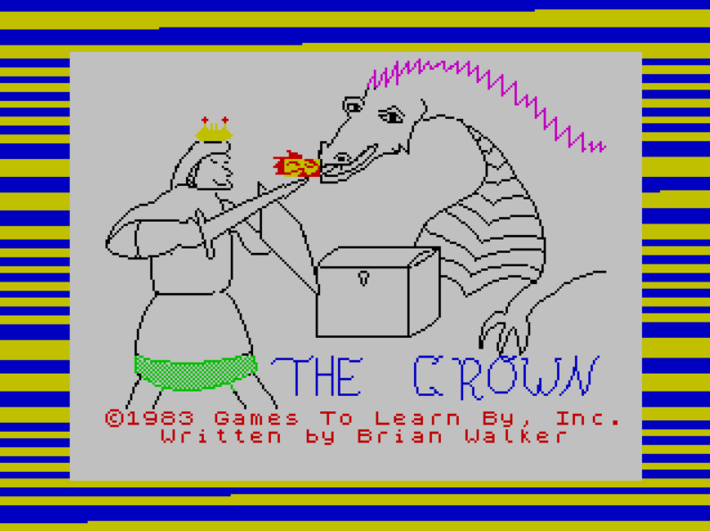
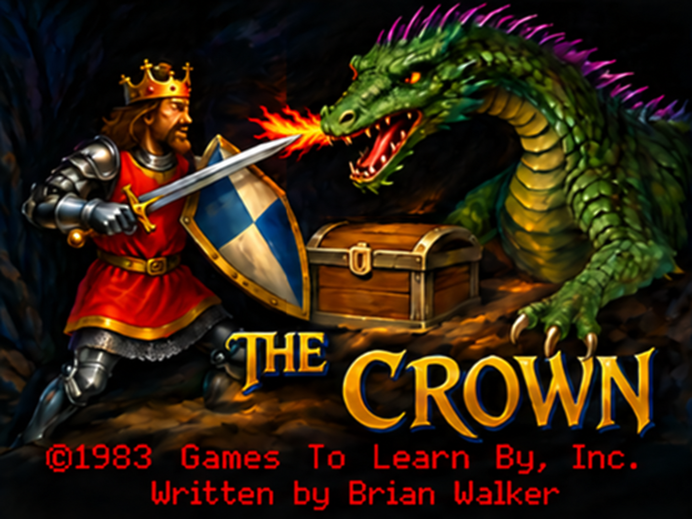
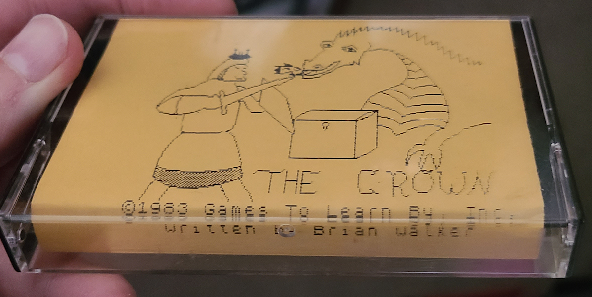
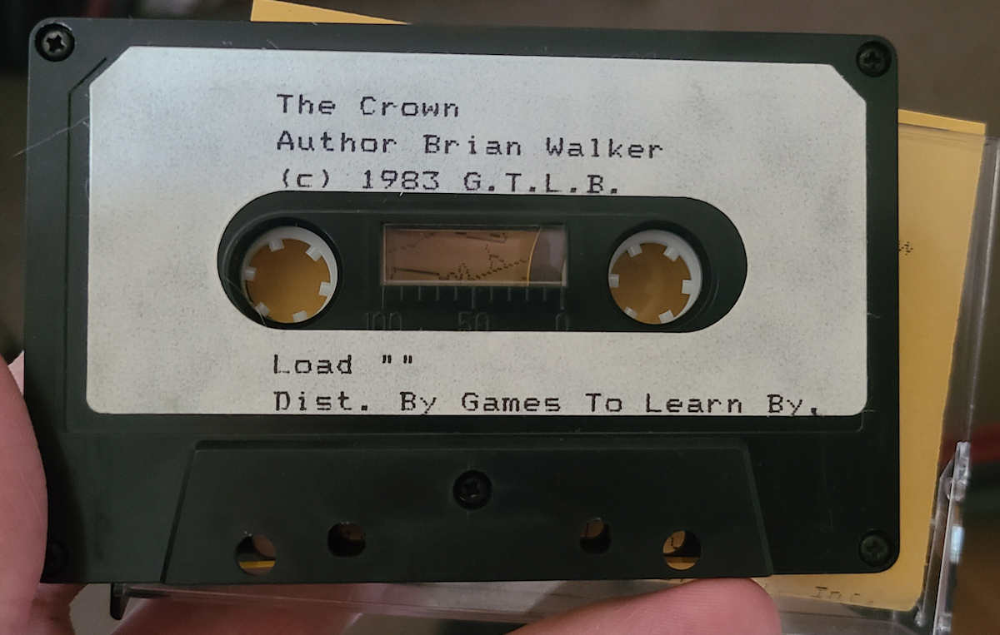

TS2068 · Remastered · October 14, 2026
The Crown (Remastered cartridge)
An evil wizard has stolen the Crown. Explore a medieval castle and three dungeon levels, survive its creatures, and bring it back to the world.
external game controller,
or keyboardDownload TheCrown.dckDownload source
All three original levels are incorporated into the cartridge. No level tape is needed. Find the keys! Use them to unlock the way forward: press U (Use), then K (Key).

From cassette BASIC to cartridge
This release starts with the recovered TS2068 BASIC program: its BASIC extraction was converted to Leap BASIC, compiled to bytecode, and packaged with an execution runtime derived from Leap v2. All three archived levels and their original character sets are included in a 64 KB cartridge, with no level-tape loading.
A TSVideoCodec-based startup animation reimagines the original title in TS2068 Extended Colour Mode. Run the cartridge or launch TSRun to discover it.
A custom Z80 machine-code random dungeon initialization routine builds the loot and creature state using the live Leap random generator. Cold startup reaches the readiness prompt in about five seconds in emulation. Replay Y generates a new dungeon; N returns to the animated title.
Keyboard commands and the original machine’s player 1 joystick port are supported. This release adds diagonal joystick movement with collision checks. Joystick fire attacks with the sword; firing arrows is a separate F command.
Verified in TSRun and Fuse with stock TS2068 HOME ROM and EXROM. Physical hardware testing is pending.
Explore the source
The source package includes the recovered original BASIC, the final Leap BASIC compiled for this cartridge, all three levels, native Z80 routines, and pinned build dependencies.
Build instructions · Browse source on GitHub · Download source ZIP
A familiar scene, remastered





The high-resolution source artwork is converted to the TS2068 display; the cartridge runs the Extended Colour Mode animation.
Play on a phone or keyboard
The custom TSRun player places the eight-direction virtual joystick on the left and game commands on the lower right, away from Reset and Fullscreen. Y/N answers sit above the command buttons. Tap Start when PRESS ANY KEY appears. Use landscape on a phone for more space, or keep portrait and scroll as needed.
Movement: Q up · Z down · O left · P right, or joystick/DPad.
Combat: A Attack with sword (joystick fire) · F Fire arrow.
Items: U Use, then K Key · J Jump/Ring · F Flame/Scroll · T Teleport/Gem.
Other: I Inventory · S Search · G Grab · D Drink · W Wait · H Help · Space Continue.
Rescuing the Crown
jon0x0 recovered the working program from an untouched backup tape, restored the original title from the surviving part of his damaged original, and recovered the three-level tape on side B. The remastered cartridge builds on that preservation work.


Read the complete “Rescuing the Crown” post →
Original game and catalog description · Recovered cassette archive